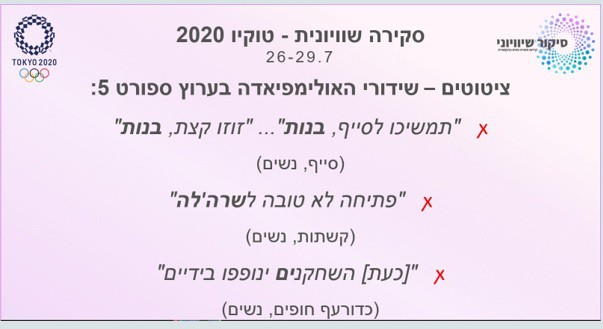

מהי הכחדה סימבולית?
הכחדה סימבולית = היעדר ייצוג של קבוצה או אדם מסוים.
"מחיקה" של אותה קבוצה אבל לא באופן ממשי, אלא מחיקה מהרמה הסימבולית (התקשורתית). כשאמצעי תקשורת מתעלם מקבוצה מסוימת, לא מעניק להן ייצוג הולם – הוא מבצע הכחדה סימבולית.
זוהי אפלייה לרעה של קבוצה מסוימת.
זוהי אפלייה לרעה של קבוצה מסוימת.
השלכות ההכחדה
ההכחדה משפיעה על הבניית המציאות הן של החברה כולה והן של הקבוצה המוכחדת/מודרת:
- חברי אותה קבוצה יכולים לחוש בודדים, לא שייכים ואף לא לגיטימיים.
- גם אנשי החברה הכללית יכולים לראות אנשים אלו כפחות לגיטימיים ולא אזרחים שווים.
טכניקת הדרה
הכחדה סימבולית היא אחת הטכניקות להדרת קבוצות חלשות והרחקת קבוצות שוליים ממרכז הכוח.
מעגל הקסמים
- קבוצה נתפשת כשולית/חלשה
- הכחדה סמבולית על ידי התקשורת
- הקבוצה אינה מסוקרת כראוי או כלל לא בתקשורת
- נתפסת עוד יותר חלשה ולא לגיטימית
- זוכה לעוד פחות סיקור או לסיקור יותר שלילי
- הופכת עוד יותר שולית ויותר חלשה...
שידורי ספורט והכחדה סימבולית
הקשר לאומי: הכחדה סימבולית של קבוצות או ספורטאים ששייכים למיעוטים (מיעוט אתני, לאומי וכו').
הקשר מגדרי: הכחדה סימבולית של ספורט נשים – סיקור מועט, היעדר סיקור, או סיקור מזלזל של ספורט נשים.
דוגמאות: אולימפיאדה
דוגמאות להכחדה סימבולית של ספורט נשים בשידורי האולימפיאדה:
- מעט נשות תקשורת ופרשניות.
- ציטוטים שמדגימים זלזול או ביטול של ספורטאיות.
הפורום לסיקור שוויוני וקידום ספורט נשים
דוגמה לפוסט מהפורום: חצי שעה לפתיחת המשחק במוקדמות יורוקאפ נשים, ואין אישור משטרה, אין מזגן, והעירייה בחופש. יחס מזלזל בספורט הנשים.
